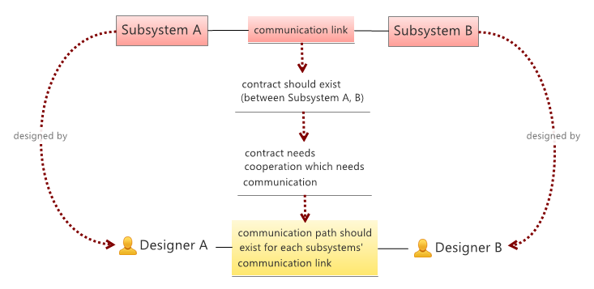

Conway law
Conway's law states that
organizations which design systems ... are constrained to produce designs which are copies of the communication structures of these organizations
-- Melvin E. Conway: How Do Committees Invent?
A simple visual proof using the concept of the original paper is the following:

structure of a system
- Complex systems are tpically designed using a divide-and-conquer approach. That is the system is decomposed into smaller subsystems, until the complexity becomes managable by the individual designer (or designer group).
- Subsystems need to communicate each other (in some meaningful way specific to the domain the system deals with). This is necessary in order to act as a whole, that is as a system.
- Subsystems and subsystem communications define a graph-like structure where the nodes are the subsystems and the edges are the direct communication links between subsystems.
designed by relation
- Every subsystem is designed by a designer (or designer group), which then creates a mapping from subsystems to designers (or designer groups).
Note that: The above design by relation is called an N:1 relation in the database engineering world, since (a) the same designer could design many subsysems and (b) each subsystem has a designer.
relation between communication links
- When two subsystems communicate each other, they require an agreed upon contract which governs their communication.
- This contract (since it is a contract) should be based on the agreement between the corresponding designers. That is it must be the result of some cooperation between the designers of the two subsystems. Since cooperation needs some communication, hence:
- There should exist a communication path between any two designers who designed subsystems communicating each other. This then creates a mapping between the (communication) links of the subsystems and the (communication) pathes between the designers.
a special case
There is the special case, when the two subsystems are designed by the same designer. So generally we can say the following:
- Each communication link of the subsystems is either (a) mapped to the same designer if she designed both systems or (b) mapped to two designers if different persons (groups) designed them. Either the designer is the same, or at least they communicate each other.
If there were no such special cases, then the mapping would be a one-to-one relation, called isomorphism, which informally means that the two structures would be equivalent. Due to the above special case, the mapping is not necessarrily a one-to-one relation, since different subsystems may collapse (map to) the same designer. This happens when the same designer designed different subsystems. This kind of mapping, which (a) is structure-preserving, but (b) is not necessarrily a one-to-one relation is called homeomorphism in math.
(If you need another sample, take the mod 2 (ie. parity) calculation. This is also a homeomorphism, between integers and parities, where the structure is defined by the addition operator!)
conclusions and remarks
After all Conway law states that the communication structure of a project, its designer organizations is the image of the system they design. This has one interesting corollary:
If the communication path between designer organizations is constrained by some rules, then the same rules would constrain the system itself as well. Or by the original words of Conway:
organizations which design systems ... are constrained to produce designs which are copies of the communication structures of these organizations.
Some closing remarks:
- Developers vs. designers: In the IT world there's a tendency to blur the frontier between designers and programmers (ie. eat your own dog food). Hence within the IT domain, nowdays one may replace designers with developers in the above statement.
- Open contracts: It would be nice to investigate open contracts - how Conway law applies there. IT produces many open standards/interfaces, which then yields a slightly different type of cooperation/agreement between developers, other than direct peer-to-peer agreements. For instance both webservers and web browsers should adhere to the http specification, however this does not necessarrily mean that each webserver/browser developer participated in the HTTP specification.
- Cross-system processes/contracts: Another interesting question is the following. Many (business) processes span more than two subsystems. In this case the contract (participating subsystems must adhere to) does not just effect just the nodes linked directly (ie. the direct links), but the set of participating systems taken as a whole (linked either directly or indirectly). This may yield a slight extension of Conway law (?!). That is: it might not be enough just to ensure peer-to-peer communication related to subsystem links. Instead it might be necessarry to ensure communication between all interested parties.